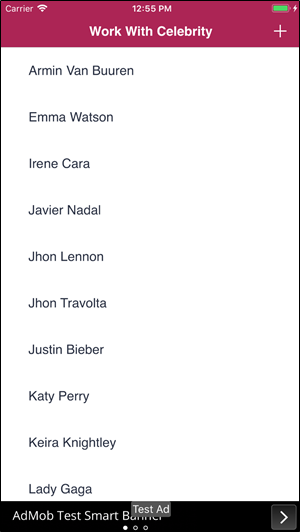

A marketing and promotion activity; draw attention to (generally to sell goods or services). You can incorporate ads using an Ads View control that you can drag from the toolbox to any section of the layout.  See also |
| Backlinks |
| Ads View control |
| Category:Menu object |
| Toc:Native Mobile Applications Development |